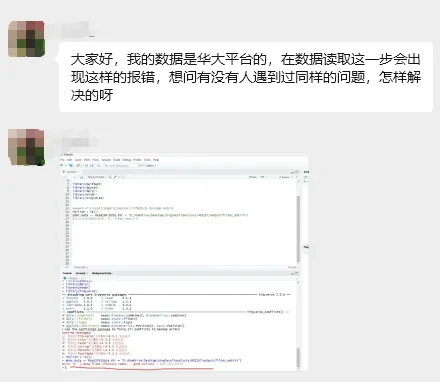
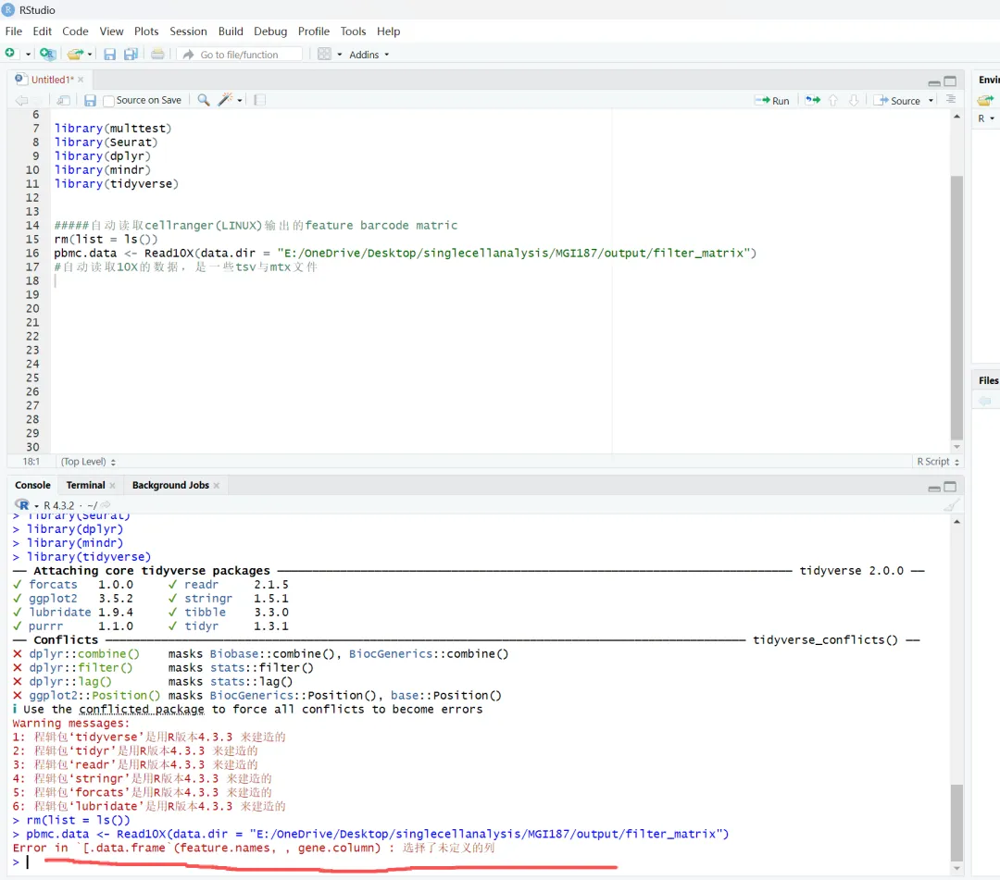
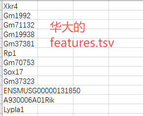
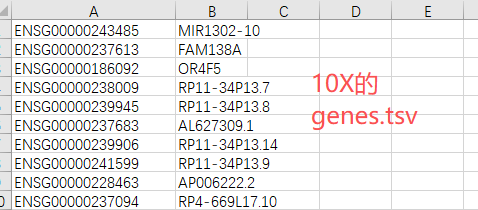
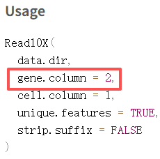
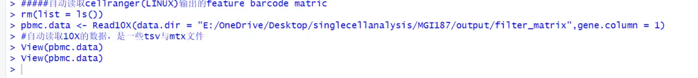
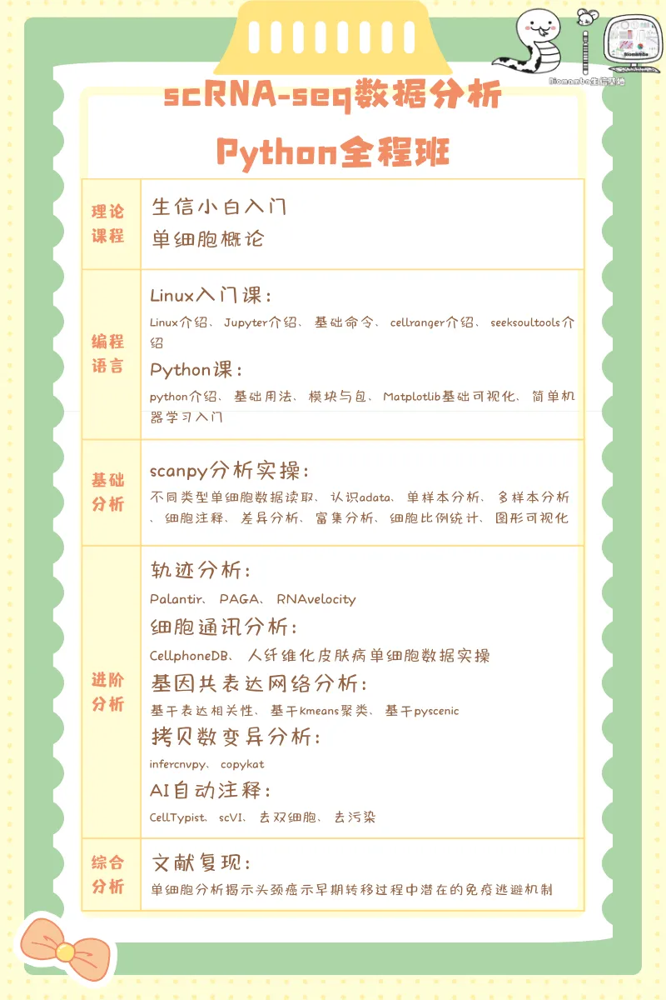

掌握数据格式，才不怕报错
原文：https://mp.weixin.qq.com/s?__biz=MzAwMzIzOTk5OQ==&mid=2247535927&idx=1&sn=6a24970ba3c55977ac8b6799fb7f2c06&chksm=9b3c3467ac4bbd711f1405c02db9e4426d159d958d7190bb04d4a60f33624bcd64eb4c8221d1#rd 合集：答读者问
一、写在前面
有小伙伴在交流群中表示出师不利，还没开始分析，读取数据便遇到了报错，用Read10X()读取华大的单细胞矩阵时报错"Error in [.data.frame (feature.names, ,gene.column) : 选了未义的列"。


本教程基于Linux环境的Rstudio演示，计算资源不足的同学可参考：RTX5090、4080S、5070显卡上机访问链接：https://biomamba.xiyoucloud.net/ 如果需要单细胞数据分析教学、生信热点全文复现、自测数据个性化分析辅导、常态化实验学习，欢迎联系客服微信[Biomamba_zhushou]。
二、有问题就有答案
显然这不能怪10X和华大，更不能怪Seurat，每个平台有自己输出文件的习惯很正常，此前我们演示过华大C4平台scRNA-seq定量分析流程，输出的features.tsv.gz文件中只包含了一列Gene的Symbol，而10X的genes.tsv第一列是ENS编号，第二列才是基因Symbol：


但Read10X()默认读取第二列作为gene名，显然，你不能读取一个不存在的列：
这是个古老的问题(答读者问（八）为什么Read10X也会报错?)，所以这位同学遇到的报错只需要在Read10X()函数中设置一下gene.column=1即可。一个简单的问题落在小白的身上就是一座山(突然想起学单细胞走过的弯路)
事实上如果你对R语言和单细胞足够了解，你完全可以不用Read10X()函数：-
-
-
-
- *
-
-
-
# 加载包：library(Matrix)# 读取填充值：mymatrix <- readMM(gzfile('matrix.mtx.gz'))# 转换为dgC矩阵mymatrix <- as(mymatrix,'dgCMatrix')
-
- *
# 读取基因：feature <- read.table(gzfile('features.tsv.gz'))feature <- feature[,1]# SYMBOL在第二列就写2
-
- *
# 读取barcodebarcodes <- read.table(gzfile('barcodes.tsv.gz'))barcodes <- barcodes[,1]# barcode在第几列就填几
-
-
- *
-
# 合并矩阵并创建Seurat对象rownames(mymatrix) <- feature # 行名为基因名colnames(mymatrix) <- barcodes scRNA <- Seurat::CreateSeuratObject(mymatrix)
三、少走弯路
少走弯路，更多单细胞分析技巧可见：限时回归！两个月时间，手把手教会你scRNA-seq数据分析！82h搞定scRNA-seq分析全流程(Python版) 

如何联系我们

 留一个领取资料、开箱即用的单细胞分析镜像的微信号[Biomamba_zhushou]，方便各位随时交流。同时我们也构建了交流群矩阵，欢迎大家入群讨论。
大家可以阅读完这几篇之后添加给生信入门初学者的小贴士
没有检索，就没有发言权
留一个领取资料、开箱即用的单细胞分析镜像的微信号[Biomamba_zhushou]，方便各位随时交流。同时我们也构建了交流群矩阵，欢迎大家入群讨论。
大家可以阅读完这几篇之后添加给生信入门初学者的小贴士
没有检索，就没有发言权
已有生信基地联系方式的同学无需重复添加

 您点的每个赞和在看，我都认真当成了喜欢
您点的每个赞和在看，我都认真当成了喜欢